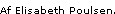

Hvad gør en bingovært med 38,5 i feber, når der lige er sluppet en flok vilde bøsser ind i studiet, og der kun er sekunder tilbage, inden aftenens udsendelsen går live i luften? De fleste ville løbe skrigende hjem i seng, men Zulu Bingovært Jan Elhøj nøjes med - i røg og damp og under overdøvende pift og klapsalver - at løbe ind i ragnarok iført skotskternet kilt og en ditto jakke - spillende på en panfløjte. I de næste 45 minutter er han på uafbrudt. Og når han ikke deler chokoladeovertrukne wc'er, flæskesvær og Volvo Amazoner ud til bingovindere og hælder ketchup og sennep ud over en levende hot dog (Dennis Agerblad dunst red.), skal han og resten af holdet holde styr på bøsserne, der helt tydeligt har tænkt sig at overtage så meget af showet som overhovedet muligt. »Det her bliver ikke kedeligt,« konstaterer Torkel, Jan Elhøjs trinde sidekick. »Publikum kommer i aften fra Københavns undergrunds-homomiljø "dunst"«... ...»Vi er nogle stykker, der sammen finder ud af, hvad vi skal lave, og hvilke jokes, der skal fyres af,« fortæller Jan Elhøj, der snart har været i business i ti år og før Zulubingo mest var kendt som den 'smarte' Kenned i Banjo's Likørstue. Ude i OB-vognen bag studiet sidder Peter Amelung - manden der sammen Jan Elhøj finder på det meste af løjerne i Zulubingo - sammen med holdet, der trækker i trådene og vælger, hvad seerne skal se i aftenens bøsseshow. Og det viser sig at blive lidt af en opgave. For selv om Henrik Abel, Danmarks førende publikumsopvarmer, udover at varme op under publikum også har instrueret dem i, hvad de skal og hvad de absolut ikke skal gøre, så synes i hvert fald den sidste del at været feset totalt ud. En kæmpestor, lyserød dragqueen-blondine (Ramona Macho dunst red.), en smal sort sag med bar røv (Puta dunst red.) og den levende hotdog (Dennis Agerblad dunst red.) - stadig indsmurt i ketchup og sennep - flagrer ind her der og alle vegne foran de fem kameraer, mens Jan Elhøj uden at lade sig distrahere deler gaver ud til en bedstemor uden kørekort, der vinder aftenens hovedgevinst: en Volvo Amazon fra 1966. Man kan også vinde en fiskekutter, og sidste år var der en, der vandt en flyvemaskine - alle er af ældre dato. Zulubingo havde 133.000 seere på årets premiereaften, og sidste gang blev der printet 150.000 bingoplader ud. Jyderne spiller på flest plader. De er rene proffer, når det gælder bingo. Det er Jan Elhøj også. Han klarer - trods influenza og 38,5 i feber - diverse bedstemødre, bøsser og bingovindere. Uddrag fra artiklen.  |
||||
|
Print denne side |